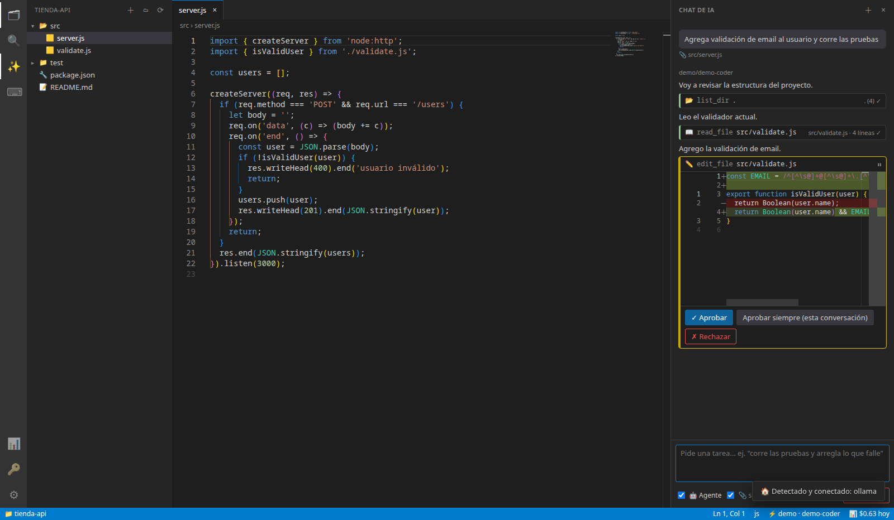

Zinarix Studio conecta 62 proveedores y 300+ modelos —de los más potentes
a los de centavos, o locales y gratis con Ollama— con un agente que entiende tu proyecto
y trabaja con tu aprobación.
Un editor completo con el motor de VS Code, más la libertad de elegir el modelo correcto
para cada tarea.
🤖
Un agente que trabaja en tu proyecto
Lee y busca archivos, propone cambios con vista de diferencias y ejecuta comandos en
la terminal. Cada edición y cada comando esperan tu aprobación, y con un clic
reviertes todo.

⚡
Cualquier modelo, un clic
Elige el proveedor y luego el modelo, con precio, contexto y capacidades. Uno para el
chat, otro para el agente y otro para editar.
📊
Consumo a la vista
Lo que gastas hoy y en el mes por proveedor, gráfica de 30 días y presupuestos con
aviso al 80 %.
🏠
Local y privado
Detecta Ollama, LM Studio y vLLM solo. El modo 100 % local bloquea cualquier llamada a
la nube.
🔐
Tus llaves, seguras
Las API keys viven en el llavero del sistema. Nunca en archivos ni logs, y los
secretos de tu código se ocultan antes de enviarse.
⌨️
Un editor de verdad
Monaco, terminal integrada, búsqueda global, paleta de comandos, arrastrar y soltar
carpetas y atajos familiares.
Vistazo
Míralo en acción
Zinarix Studio
El agente agregó la validación, corrió las pruebas y te deja revertir con un clic.
Cómo funciona
Listo en un minuto
1
Descarga e instala
Un instalador para tu sistema. Sin cuentas ni registros.
2
Conecta una IA
Pega la llave de tu proveedor favorito o usa Ollama gratis y sin internet.
3
Arrastra tu proyecto
Suelta la carpeta en la ventana y pídele al agente lo que necesitas.
Modelos
Del más potente al más barato
Usa el mejor modelo para cada tarea: uno de razonamiento para el agente, uno rápido y de
centavos para chatear, uno local cuando trabajas con código privado. Filtra por
herramientas, visión, razonamiento, contexto o precio.
Ubuntu, Debian, Mint y Pop!_OS instalan el .deb; Arch, Manjaro y EndeavourOS el
paquete pacman; Fedora, openSUSE y el resto usan el AppImage en tu
carpeta personal (sin sudo).
Ejecuta el instalador. Si Windows SmartScreen muestra un aviso, pulsa
Más información → Ejecutar de todas formas (el instalador aún no tiene
certificado de firma).
Sí. Zinarix Studio es gratis y de código abierto (MIT). Solo pagas a los proveedores de
IA que tú elijas, con tus propias llaves — o nada si usas modelos locales.
¿Dónde se guardan mis API keys?
En el llavero de tu sistema operativo (Keychain, Credential Manager o libsecret). No hay
servidores intermedios: la app habla directamente con el proveedor que elijas.
¿El agente puede romper algo?
Cada edición y cada comando requieren tu aprobación y ves exactamente qué hará. Los
comandos peligrosos se bloquean siempre, y con un clic reviertes todos los cambios del
agente.
¿Funciona sin internet?
Sí, con modelos locales (Ollama, LM Studio, vLLM, llama.cpp). Activa el modo 100 % local
y ninguna petición sale de tu equipo.
¿Cómo sé cuánto estoy gastando?
El panel de consumo muestra lo gastado hoy y en el mes por proveedor, con una gráfica de
30 días y presupuestos que te avisan al 80 %.